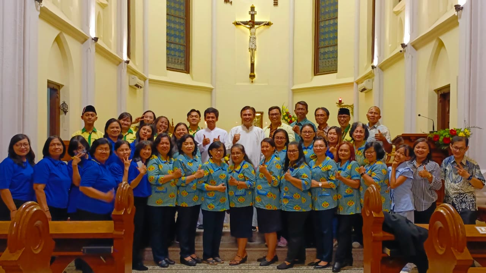

Berita Utama
Misa Bulanan Organisasi Kemasyarakatan Katolik Keuskupan Malang
Malang, Senin (31/08/2026) — Organisasi Kemasyarakatan Katolik di Keuskupan Malang kembali berkumpul dalam Misa Bulanan sebagai momentum untuk merayakan Ekaristi, mempererat persaudaraan, dan memperkuat semangat kebersamaan dalam pelayanan serta kehidupan bermasyarakat.